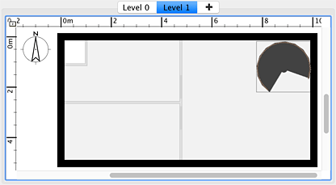

Minden otthon alapértelmezésben egy szinttel készül, de a DobryDom3D képes több szintet is kezelni, melyek lehetnek az alapszinttõl feljebb vagy lejjebb (pozitív vagy negatív emelés). Ha új szintet kíván hozzáadni, válassza a Alaprajz > Szintek > Szint hozzáadása menüt. Ha az otthonnak egynél több szintje van, az alaprajz tetején fülek jelennek meg, melyek segítségével kiválaszthatja, hogy mely szinttel kíván dolgozni. A fülek után megjelenik egy speciális fül, melynek + jelére kattintva további szinteket adhat hozzá.
 |
| Az új szint halványan mutatja az alatta levõ szint falait és mennyezetét
|
Hogy könnyebben kiismerje magát egy újonnan létrehozott szinten, az alatta levõ szint elemei halványan megjelennek az alaprajzon. Ha az aktuális új szint a legalsó, akkor a fölötte levõ szint elemei jelennek meg. Ha a Mágnesesség aktív, az alsóbb szint falai és helyiségei vonzást gyakorolnak az egérre, hogy ezzel segítsék munkáját a fal- és helyiségkészítõ eszközök használatakor. Ugyanakkor falakat, helyiségeket és bútorokat egyszerûen kijelölhet és lemásohat valamely más szinten és beillesztheti az új szintre.
Minden szintnek van emelése és egyéb tulajdonságai, melyek megváltoztathatók. Ha valamely fal, vagy bútor magasabb mint az aktuális szint emelése, ezek a felsõ szinten is eredeti színükkel fognak megjelenni, pont mint a falak és a csigalépcsõ az alábbi ábrán:
 |
| A felsõ szinten látszanak az alsóbb szintre helyezett, de a szintné magasabb elemek is
|
Az új szint hozzáadásának nincs hatása a 3D nézetre, és padló sem jelenik meg automatikusan, a szinteket elválasztandó. A 3D nézetben akkro jelenik meg az új szint, ha elkezd hozzáadni falakat, helyiségeket vagy bútorokat.
|